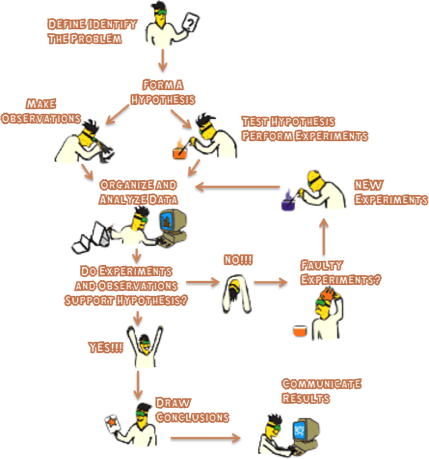

Scientific Method
The SCIENTIFIC METHOD may sometimes yield wrong conclusions, but over time is tends to be self-correcting.
Branches of science include: biology, astronomy, chemistry, physics, geology and a multitude of sub-branches of each.Process of science: observations, questions, hypotheses, investigations, observations, data collection, etc…
INFERENCING is included in the Scientific Method since inferencing is based on your SCHEMA (prior-knowledge that leads to a conclusion- not mere observations!)
“Science is a mode of inquiry that attempts to arrive at knowledge of the physical universe by means of observation and by testing hypotheses” (Swanson, 2011).
